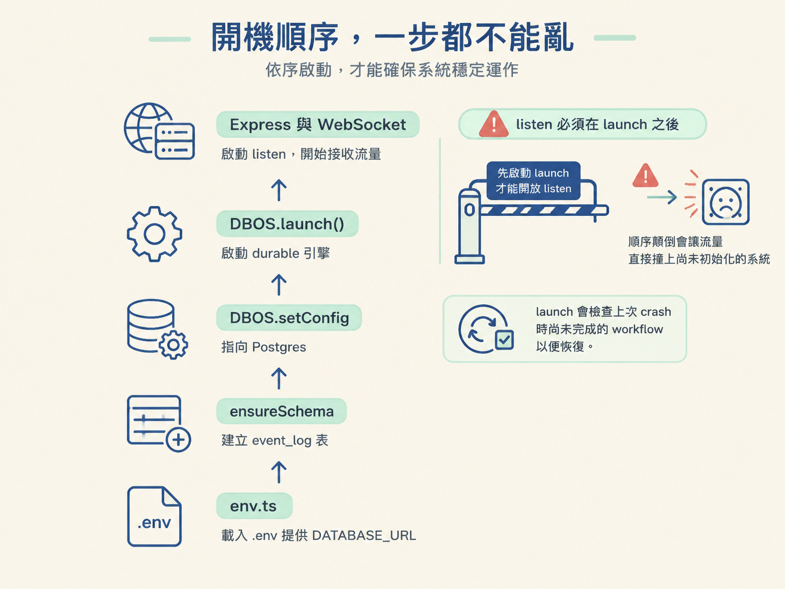
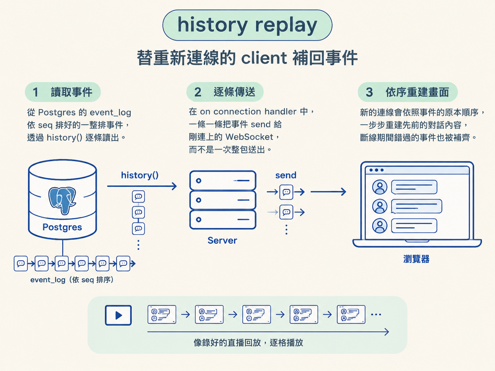

如果 workflow 只在目前這個 server process 裡執行，server 一重啟，進度就會像寫在白板上的字一樣消失。這一步要做的，是把 workflow 接上 server 與資料庫：使用者送出 submit_task 後，透過 startWorkflow 啟動可恢復的 workflow；client 重新連線時，再從 event log 重播錯過的事件。
最後會用 live demo 驗證：殺掉正在執行的 server，重啟後 workflow 不從頭開始，而是從中斷處繼續。
workflow 已經註冊完成，現在要把它接上真正會運作的 server。這裡最容易踩到的坑不是 API，而是初始化順序：資料庫模組讀取環境變數的當下，就需要已經存在的 DATABASE_URL。順序錯了，server 甚至還沒開始接流量就會先啟動失敗。
因此，env.ts 必須用 dotenv 載入 .env，而且要成為 server 的第一個 import，先於任何可能讀取環境變數的模組，例如 harness/db.ts。之前 AI SDK 可能會替你載入環境變數；現在加入資料庫後，這個時機要由我們自己明確控制。
接著，把啟動流程集中在一個 async main() 裡，依序完成三件事：
async function main() {
await ensureSchema(); // 1. 建立/補全 event_log 表
DBOS.setConfig({
name: "harness",
database: { hostname: "localhost", ... } // 2. 指向 Postgres
});
await DBOS.launch(); // 3. 啟動 durable 引擎
// 接著才啟動 Express + WebSocket server
}
main().catch((err) => {
console.error(err);
process.exit(1);
});ensureSchema 會在開機時自動建立資料表。正式系統通常會改用正式的 migration，但這裡先確保程式能跑起來。
DBOS.setConfig 設定 app 名稱與資料庫連線；DBOS.launch() 則真正啟動 durable 引擎。它也會檢查上次 crash 時尚未完成的 workflow，讓這些工作有機會恢復。
因此有一個不能違反的約束：server 的 listen 必須在 DBOS.launch() 之後執行。否則 server 已經開始接收請求，但 workflow 引擎還沒準備好，流量會先撞上未初始化的系統。

server 啟動後，再把上一課的 durable bus 接到 WebSocket。bus 每產生一個事件，就把它轉成 JSON，廣播給目前還連線中的 client：
subscribe((event) => {
const payload = JSON.stringify(event);
clients.forEach((client) => {
if (client.readyState === WebSocket.OPEN) client.send(payload);
});
});readyState === OPEN 是必要的防護。client 可能已經斷線；如果仍對關閉的連線送資料，server 可能直接拋錯。
這樣一來，durable bus 就成為 workflow 與瀏覽器之間的橋：workflow 先把事件落盤，再把同一事件即時推給線上的 client。寫入與廣播各自負責不同事情，前者保證之後能找回，後者負責讓目前的畫面立即更新。
使用者按下送出後，server 收到的是一條 submit_task 訊息。handler 不再直接呼叫 in-process runtime，而是把這個動作交給 DBOS，啟動一次 durable workflow：
if (message.type === "submit_task") {
await DBOS.startWorkflow(runAgentWorkflow)(message.input);
}DBOS.startWorkflow(runAgentWorkflow) 會回傳一個接受 workflow 參數的函式，所以這裡接著立刻把 message.input 傳入。
這個整合點改變了執行方式：原本的呼叫只活在目前的 process 裡，process 結束後就消失；現在則由 durable 引擎接手，將 workflow 的進度保存下來，之後才能恢復並避免已完成的步驟重複執行。
client 重新連線時，可能是瀏覽器剛重整，也可能是 server 曾經重啟。這時不能只等待新事件，否則畫面會缺少斷線期間已經發生的內容。on connection 會先讀出完整 history，再逐條送回 client：
ws.on("connection", (socket) => {
// 逐條重播，而非一次整包送出
const events = await history();
for (const event of events) {
socket.send(JSON.stringify(event));
}
});這裡刻意逐條傳送，而不是把整段 history 一次打包。client 可以按照事件原本的順序重建狀態，就像觀看一段已經錄好的直播回放。
所以，重新整理瀏覽器後，先前的對話仍然存在。它們不是只留在前端記憶體裡，而是從 event_log 讀回來，再依序送到新的連線。

組裝完成後，用一個最直接的實驗驗證整套機制：送出任務，趁 agent 還在思考時殺掉 server；接著重啟 server，再重整瀏覽器。
如果 durable workflow 正常運作，工作不會從頭開始，而是從中斷處繼續串流。瀏覽器則透過 history replay 補回已經發生的事件，再接收重啟後產生的新事件。
這個結果不是魔法，而是 agent loop 裡的 messages 陣列提供了可判斷的狀態。只要最後一則訊息的 role 是 user 或 tool，模型就知道自己還需要回覆；如果最後一則是 assistant，模型就不會再回一次，否則會變成兩則連續的 assistant 訊息，像自己對自己接話。
demo 中，取消的時間點留下了一則尚未被回應的工具結果，role 是 tool。因此 server 重啟後，模型看到的不是一個已經結束的對話，而是一筆還欠著回覆的工具結果，便能自然地接著產生下一步。
這一步沒有改寫 runtime 的核心邏輯。只是把 emit、tool call 與 streamText 這三種副作用包成 durable step，讓它們能落盤、恢復，並避免重複執行。現在，這個 agent 已經能從 server crash 中活著回來。